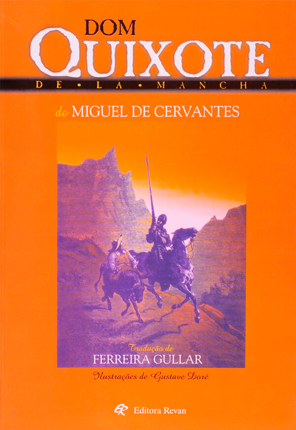

Sinopse
A obra narra as aventuras e desventuras de Dom Quixote, um homem de meia idade que resolveu se
tornar cavaleiro andante depois de ler muitos romances de cavalaria. Providenciando cavalo e
armadura, resolve lutar para provar seu amor por Dulcineia de Toboso, uma mulher imaginária.
Consegue também um escudeiro, Sancho Pança, que resolve acompanhá-lo, acreditando que será
recompensado.
Quixote mistura fantasia e realidade, se comportando como se estivesse em um romance de
cavalaria. Transforma obstáculos banais em gigantes e exércitos de inimigos.
É derrotado e espancado inúmeras vezes, sendo batizado de "Cavaleiro da Fraca Figura", mas
sempre se recupera e insiste nos seus objetivos.
Só volta para casa quando é vencido em batalha por outro cavaleiro e forçado a abandonar a
cavalaria. Longe da estrada, fica doente e acaba morrendo. Nos seus momentos finais, recupera a
consciência e pede perdão aos seus amigos e familiares.